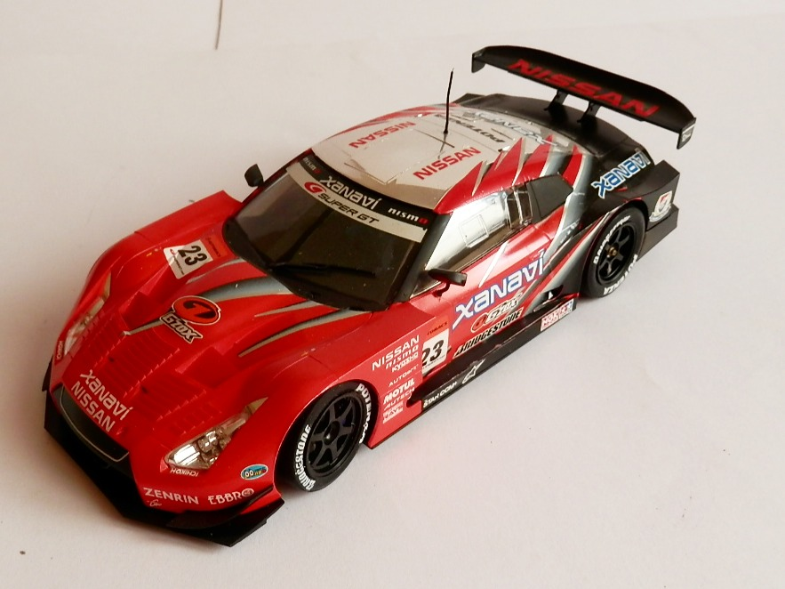
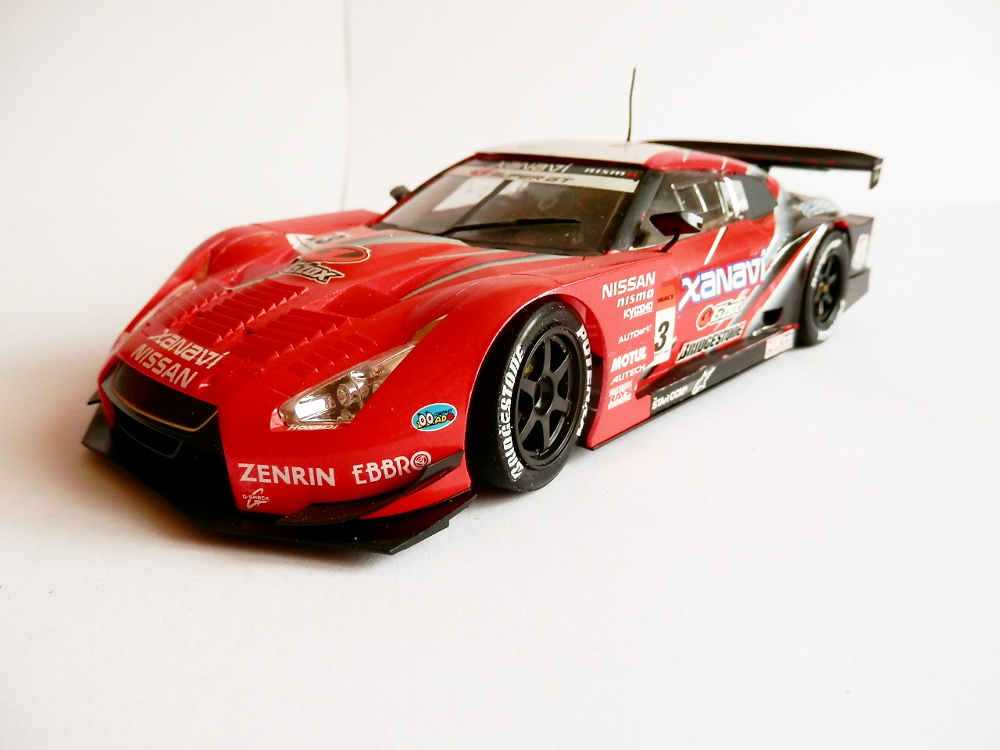
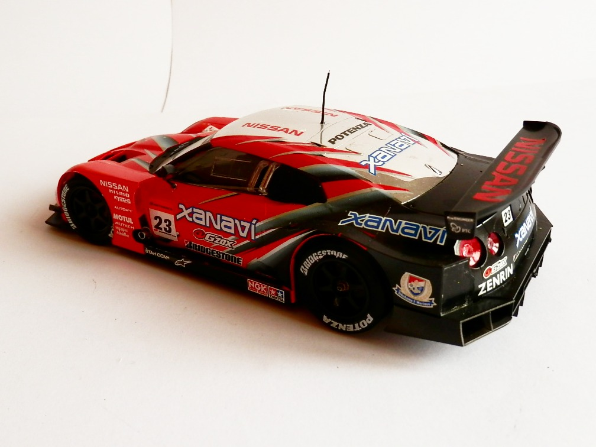

Auto e veicoli stradali · scale model archive
Nissan Nismo GT-R Xanavi
Nissan Nismo GT-R Xanavi — Kit: Tamiya, Scale: 1/24. 2008 racing season

Photo gallery


English description
2008 racing season
Descrizione italiana
Stagione agonistica 2008.